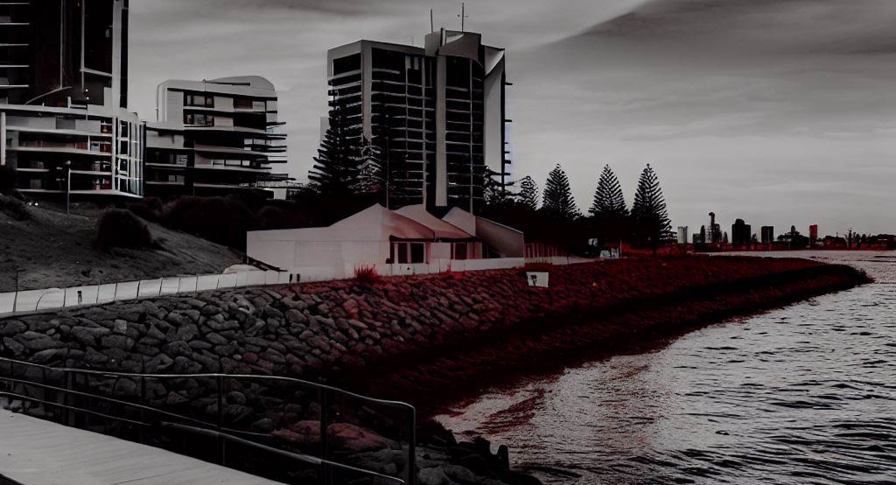

A COMPREHENSIVE GUIDE TO SEEING THE BATAVIA TODAY

December 16, 2022
Are you ready for a day filled with history, adventure, and a touch of mystery? Look no further than Fremantle, Western Australia, home to the renowned WA Shipwrecks Museum and the captivating Batavia Gallery. Join me on a lighthearted journey as we explore these fascinating attractions and discover the allure of the Batavia shipwreck.
Our first stop is the WA Shipwrecks Museum, a treasure trove of maritime history nestled along the vibrant shores of Fremantle. As you step through its doors, you'll be transported back in time to an era of perilous voyages and maritime exploration. The museum houses an impressive collection of artifacts, tales of triumph, and heartbreaking stories of ships lost at sea.
But what truly sets this museum apart is its centerpiece—the Batavia Gallery. Here, the story of the infamous Batavia shipwreck comes alive. Immerse yourself in the haunting ambiance as you explore the remnants of the ill-fated vessel. The gallery showcases well-preserved artifacts, each whispering tales of the ship's tragic voyage and the brave souls who sailed upon her.
As you wander through the exhibit, marvel at the intricately crafted ceramics, envisioning the lavish banquets held on board. Navigational instruments offer a glimpse into the challenges faced by explorers as they charted new territories. And don't miss the personal belongings—an intimate glimpse into the lives of those who once walked the decks of the Batavia.
But the adventure doesn't stop there. After indulging in the rich history of the Batavia shipwreck, take a leisurely stroll through the charming streets of Fremantle. Grab a cup of locally roasted coffee and meander through the bustling Fremantle Markets, where the scent of freshly baked goods fills the air and artisans showcase their crafts.
The Batavia shipwreck and the WA Shipwrecks Museum in Fremantle offer an unforgettable experience for history enthusiasts and adventure seekers alike. It's a chance to delve into the past, to walk in the footsteps of those who braved the seas, and to be captivated by the allure of a remarkable chapter in Australia's history.
So, pack your sense of curiosity and embark on this extraordinary journey through time. Fremantle and the Batavia shipwreck await, ready to transport you to a world of maritime intrigue and discovery.